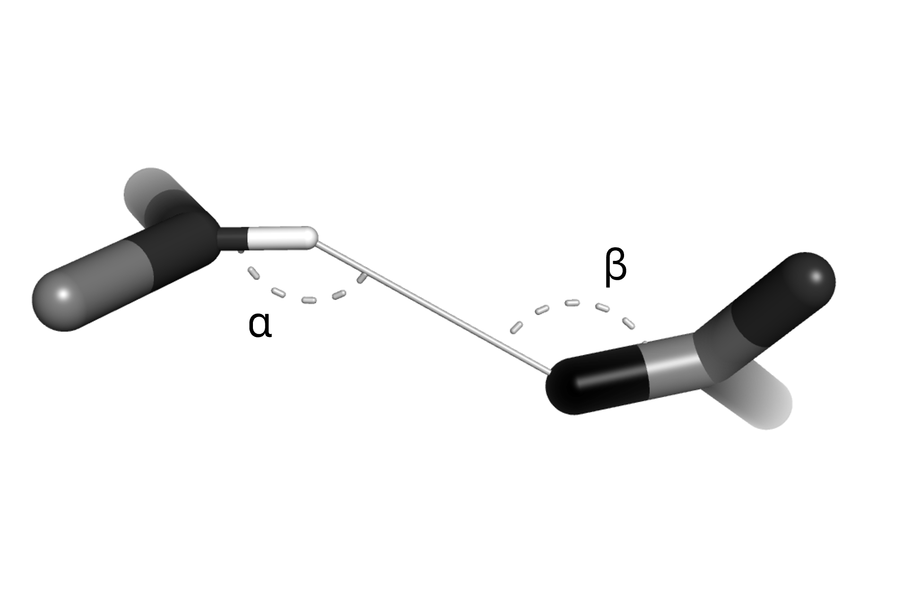

Hydrogen bonds
ProtoSyn aims to evaluate the stabilizing energy contribution of hydrogen bonds using a simple geometric potential. For each HydrogenBondPair in a pre-calculated HydrogenBondNetwork, the hydrogen bond energetic contribution is given by product of a given distance-based potential (see Available potentials) by the $cos(α)cos(β)$, where $α$ and $β$ are the angles between the donor and receptor Atom instances (in each "side" of the interaction).

Figure 1 | A schematic representation of the geometric criteria taken into account when estimating the hydrogen bonds stabilizing interactions. Besides the inter-atomic distance, ProtoSyn also calculates the $α$ and $β$ angles, with maximum energetic reward being given to planar conformations of the dimeric system.
The Hydrogen bonds section is subdivided in the following sub-sections, for organizational purposes:
Hydrogen bond network prediction
The generate_hydrogen_bond_network attempts to identify all donor and receptor Atom instances in a given Pose using rudimentary criteria. This may change in future versions of ProtoSyn.
ProtoSyn.Calculators.HydrogenBonds.HydrogenBondPair — TypeHydrogenBondPair(charged::Atom, base::Atom)Define a new HydrogenBondPair. An HydrogenBondPair is a set of two bonded Atom instances, the charged and base atom. As an example, in a carbonyl group (-C=O), the carbon is the base and the oxygen is the charged atom. It's expected that this HydrogenBondPair is involved in hydrogen bonding interactions.
See also
Examples
julia> ProtoSyn.Calculators.HydrogenBonds.HydrogenBondPair(pose.graph[1, 1, "C"], pose.graph[1, 1, "O"])
MET:1:O - MET:1:CProtoSyn.Calculators.HydrogenBonds.HydrogenBondNetwork — TypeHydrogenBondNetwork(donors::Vector{HydrogenBondPair}, acceptors::Vector{HydrogenBondPair})Define a new HydrogenBondNetwork, a set of donors HydrogenBondPair instances (strongly electronegative Atom instances, such as N, O or F) and acceptors HydrogenBondPair instances (electronegative Atom instances with a lone electron pair).
HydrogenBondNetwork()Define an empty HydrogenBondNetwork.
See also
calc_hydrogen_bond_network generate_hydrogen_bond_network
Examples
julia> ProtoSyn.Calculators.HydrogenBonds.generate_hydrogen_bond_network(pose)
Donors: 131 | Acceptors: 104
julia> ProtoSyn.Calculators.HydrogenBonds.HydrogenBondNetwork()
Donors: 0 | Acceptors: 0ProtoSyn.Calculators.HydrogenBonds.generate_hydrogen_bond_network — Functiongenerate_hydrogen_bond_network(pose::Pose, selection::Opt{AbstractSelection} = nothing)Attempts to predict the HydrogenBondNetwork of a given Pose pose (restricted to the selected region provided by the AbstractSelection selection). The following simple criteria are used:
- Donors are hydrogen (H)
Atominstances connected to a single nitrogen (N)Atominstance; - Acceptors are oxygen (O)
Atominstances connected to a single carbon (C)Atominstance.
Examples
julia> ProtoSyn.Calculators.HydrogenBonds.generate_hydrogen_bond_network(pose)
Donors: 131 | Acceptors: 104Hydrogen bonds EnergyFunctionComponent
By default, ProtoSyn generates a new HydrogenBondNetwork each call to the default Hydrogen bonds EnergyFunctionComponent. This may cause performance losses. If no mutation/design process is being performed, consider employing fixate_hydrogen_bond_network! to set a static HydrogenBondNetwork.
ProtoSyn.Calculators.HydrogenBonds.calc_hydrogen_bond_network — Functioncalc_hydrogen_bond_network([::Type{A}], pose::Pose, selection::Opt{AbstractSelection}, update_forces::Bool; [hydrogen_bond_network::Union{HydrogenBondNetwork, Function} = HydrogenBondNetwork()], [potential::Function = (x; qi = 0.0, qj = 0.0) -> 0.0]) where {A <: ProtoSyn.AbstractAccelerationType}Calculate the Pose pose hydrogen bond energy according to the given potential function (make sure the Pose pose is synched, see sync!). ProtoSyn loops through the provided HydrogenBondNetwork hydrogen_bond_network and applied the potential to each pair of charged Atom instances (based on the inter-atomic distance). Besides this component, calc_hydrogen_bond_network adds a geometric potential based on the angle between the charged Atom instances and each base (rewards 180º conformations). Optionally, hydrogen_bond_network can be a Function, in which case a new HydrogenBondNetwork is calculated. Such a custom function should have the following signature:
my_hydrogen_bond_predictor(pose::Pose, selection::Opt{AbstractSelection} = nothing)
If provided, an AbstractSelection selection limits the selected Atom instances considered for HydrogenBondNetwork prediction (if hydrogen_bond_network is a Function, otherwise the provided HydrogenBondNetwork is static and selection has no effect). An optional parameter A (Type{<: AbstractAccelerationType}) can be provided, stating the acceleration type used to calculate this energetic contribution (See ProtoSyn acceleration types). Uses ProtoSyn.acceleration.active by default. Note that, depending on the potential employed, atomic charges may be required (See assign_default_charges, for example).
See also
get_default_hydrogen_bond_network
Examples
julia> e, f, hb_pairs = ProtoSyn.Calculators.HydrogenBonds.calc_hydrogen_bond_network(pose, nothing, false, hydrogen_bond_network = hbn, potential = potential)
(-9.329167508668307, nothing, (...))
julia> hb_pairs
122-element Vector{Tuple{Atom, Atom}}:
(Atom{/2a3d:41940/A:1/MET:1/O:19}, Atom{/2a3d:41940/A:1/TRP:4/H:39})
(Atom{/2a3d:41940/A:1/MET:1/O:19}, Atom{/2a3d:41940/A:1/ALA:5/H:63})
(Atom{/2a3d:41940/A:1/GLY:2/O:26}, Atom{/2a3d:41940/A:1/ALA:5/H:63})
(...)ProtoSyn.Calculators.HydrogenBonds.get_default_hydrogen_bond_network — Functionget_default_hydrogen_bond_network(;[α::T = 1.0]) where {T <: AbstractFloat}Return the default hydrogen bond EnergyFunctionComponent. α sets the component weight (on an EnergyFunction instance). This component employs the calc_hydrogen_bond_network method, therefore defining a Pose energy based on a given potential function multiplied by a geometric angle component for each pair defined in an HydrogenBondNetwork. By default, this EnergyFunctionComponent uses the generate_hydrogen_bond_network function to predict a new HydrogenBondNetwork each call. Consider setting efc.settings[:hydrogen_bond_network] as an HydrogenBondNetwork to employ a static list of interacting Atom instances (for improved performance).
See also
Settings
hydrogen_bond_network::Union{HydrogenBondNetwork, Function}- Defines either theHydrogenBondNetworkpredictor function or staticHydrogenBondNetwork;potential::Function- Define the potential to apply (calculates energy and force value from inter-atomic distance - and optionally atomic chargesqi&qj);
Examples
julia> ProtoSyn.Calculators.HydrogenBonds.get_default_hydrogen_bond_network()
🞧 Energy Function Component:
+---------------------------------------------------+
| Name | Hydrogen_Bonds |
| Alpha (α) | 1.0 |
| Update forces | false |
| Calculator | calc_hydrogen_bond_network |
+---------------------------------------------------+
| +----------------------------------------------------------------------------------+
├── ● Settings | Value |
| +----------------------------------------------------------------------------------+
| | potential | bump_potential_charges |
| | hydrogen_bond_network | generate_hydrogen_bond_network |
| +----------------------------------------------------------------------------------+
|
└── ○ Selection: nothingProtoSyn.Calculators.HydrogenBonds.fixate_hydrogen_bond_network! — Functionfixate_hydrogen_bond_network!(efc::EnergyFunctionComponent, pose::Pose)If the given EnergyFunctionComponent efc is an Hydrogen Bonds EnergyFunctionComponent (and the :hydrogen_bond_network setting is a Function), calculate a new HydrogenBondNetwork and apply it as a static list of interaction Atom instances (improved performance).
See also
get_default_hydrogen_bond_network
Examples
julia> ProtoSyn.Calculators.HydrogenBonds.fixate_hydrogen_bond_network!(efc, pose)
Donors: 131 | Acceptors: 104